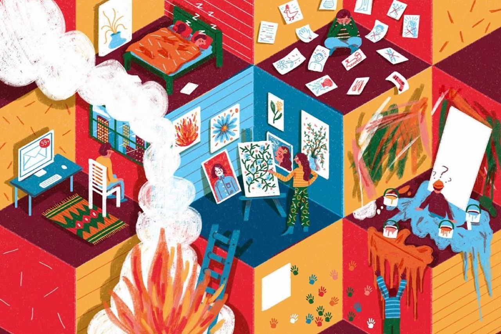

Food photography represents specialized photographic practice documenting culinary creations, ingredients, and dining experiences while functioning simultaneously as commercial tool and artistic medium. Professional food photographers develop distinctive visual languages that showcase food's aesthetic qualities—color, texture, form, and composition—while communicating appetite appeal and conceptual content. Food photography extends beyond simple documentation to encompass creative interpretation of culinary artistry, employing lighting, composition, and styling to elevate food presentation into sophisticated visual communication. Contemporary food photography increasingly engages with themes of sustainability, cultural identity, and food justice alongside traditional emphasis on visual appeal and appetite stimulation.
Here’s Another Illustrator You Should Follow

Previous articleThis Jewelry Brand Is Worn By Your Favorite Celebrities
Next articleThis Illustrator Daydreams In Pastel